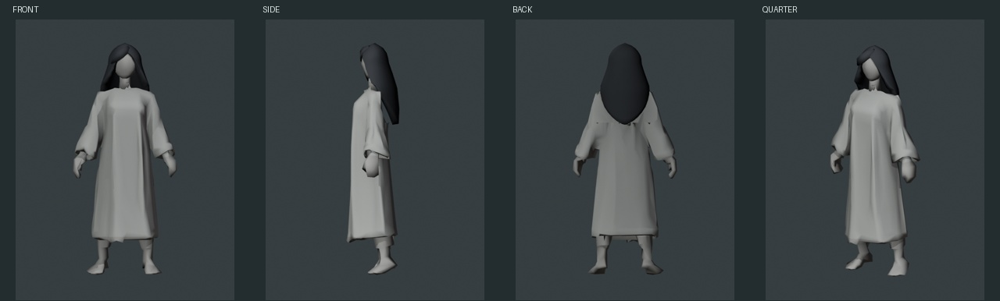
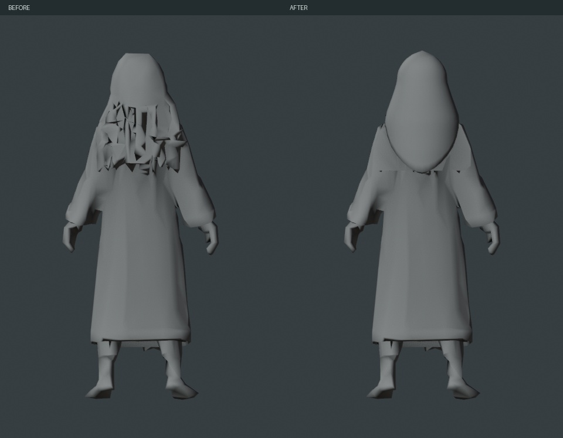
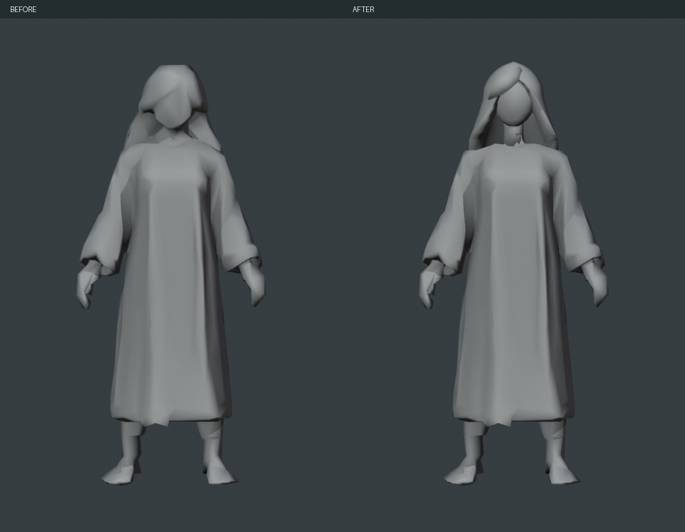
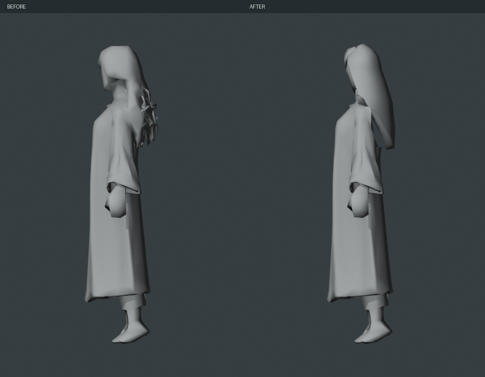
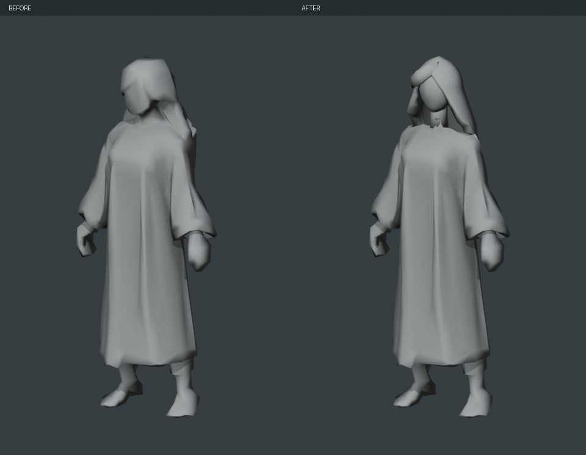
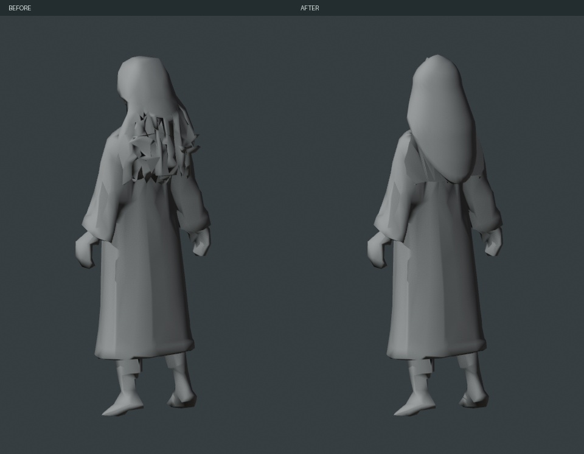
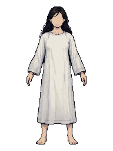

从已下载H2.5灰模继续，在Blender本地整理头部／头发及可编辑部件。原始GLB保留；云端调用0次、Tripo额度消耗0。
Blender工程 · 独立GLB候选 · 修改与限制 · 保存／导出回读
深发、浅袍只是纯色材质ID，便于识别网格；没有制作最终颜色图或其他贴图。头发、刘海、头、颈、袍体／袖子、手、脚共7个可编辑对象。

1280×720实际Blender Workbench渲染，使用同一组相机、背景及光照显示。头部／头发已重新建形，不称为原形完全不动。房间场景未改变。





沿用项目自身三视图v2，侧分长发、弱五官、简单统一休眠袍。下图仅作设计参考，不是已经完成的角色贴图。
